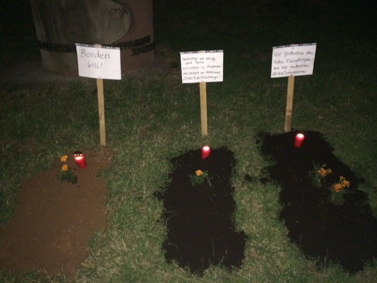

unknownrefugees

unknownrefugees.tumblr.com postet Bilder aus Aschaffenburg.
Redaktion kommunal
Wir wollen das massenhafte Sterben im Mittelmeer nicht weiterhin kommentarlos hinnehmen. Deutschland muss sich endlich seiner Verantwortung stellen und einen menschenwürdigen Umgang mit der Migration finden. Legale Einreisewege müssen geschaffen werden. Das ist die einzige Möglichkeit das Sterben zu stoppen. Das Problem sind nicht irgendwelche „Schlepperbanden“, sondern die Abschottungspolitik der EU.
schrieb die BasisGruppeEmanzipation in ihrer Pressemitteilung am Sonntag. Die Aktivisten errichteten in Aschaffenburg ein Denkmal für „die tausenden von dem EU-Grenzregime getöteten Menschen […] die auf der Flucht vor Hunger, Elend, Krieg und Not waren“ und nehmen damit Bezug auf den Aufruf des Zentrums für Politische Schönheit.
Einen beeindruckenden Einblick in die Aktionen liefert dieses Video vom Marsch der Entschlossenen in Berlin:
Anti-Nazi-Koordination Frankfurt
Basisgruppe Emanzipation
Der Vortrag beschäftigt sich mit den Fluchtursachen, der europäischen Flüchtlingspolitik und der öffentlich-medialen Besprechung der unübersehbaren Opfer am Beispiel von Lampedusa. Die nachfolgenden Thesen sollen im Vortrag begründet und bewiesen werden:
– Die toten Geflüchteten sind – auch wenn es niemand so sagen will – für die ökonomischen Interessen der führenden Staaten und ihrer Unternehmen unvermeidlich. Sie sind als Teil der zivilen Opfer des EU-Projekts notwendig!
– Die Grenztoten sind nicht Opfer „gewissenloser Schleuserbanden“, die der Innenminister nun pressewirksam verantwortlich machen will, sondern sie sind die Folge einer effizienten Abriegelung der europäischen Außengrenzen, für die Deutschland entschlossen einsteht.
– Die Toten sind nicht Opfer „unserer aller“ Gleichgültigkeit
und Ignoranz gegenüber dem Leid der Flüchtenden, wie dies Presse und Bundespräsident glauben machen wollen, sondern sie sind Produkte der ökonomischen, politischen und militärischen Erfolgsstrategie eines Staates, dem – allem Elend zum Trotz – die uneingeschränkte Loyalität der vierten Gewalt gilt.
– Die Toten bezeugen nicht das „Scheitern der europäischen Flüchtlingspolitik“, sondern sie sind Ausdruck erfolgreicher Grenzsicherung.
– Auch wenn es niemand so sagen will: Die nun öffentlich zur Schau gestellte Betroffenheit dient nicht den toten Geflüchteten – wie sollte sie auch! Scham und Trauer gelten dem Ansehen des europäischen Staatenbündnisses, seiner Parteigänger_innen und seiner Werte.
Referent: Prof. Dr. Arian Schiffer-Nasserie
Hochschullehrer für Soziale Arbeit an der Evangelischen Fachhochschule Rheinland-Westfalen-Lippe mit dem Schwerpunkt Sozial- und Migrationspolitik sowie Rassismusforschung.
Die Veranstaltung findet im Rahmen der Veranstaltungsreihe “Fluchtursachen bekämpfen – Flüchtenden helfen!” statt und beginnt um 20 Uhr – der Eintritt ist frei.
Donnerstag, 25. Juni um 20:00
Ort: Stern, Platanenallee 1, Aschaffenburg
Sebastian: Hallo Hannes. Du bist einer der Menschen die hinter dem Namen Trashrave stecken. Kommen wir gleich zu Sache: Was ist trashrave records?
Hannes: Hi Sebastian! trashrave records ist das ultimative Möchtegern-Label für Electro & Punk und das aus dem Herzen der Langeweile: Miltenberg.
S: Braucht Miltenberg ein Musiklabel, das sich offensichtlich nicht einmal sonderlich ernst nimmt?
H: Also zuerst hast du Recht: Ich nehme die Label-Geschichte nicht sonderlich ernst, was wohl auch mit der Gründung durch KBF Revolte damals zusammen hängt. Zum anderen sind wir ja kein Label im herkömmlichen Sinne, das ist mehr so ein Poser-Ding. Ich denke, das zeigt schon der Name des Labels.
S: Da stellt sich die Frage: Wer ist überhaupt „ihr“?
H: „Wir“ sind die Leute, die in gegenseitigem Kontakt stehen und Lust haben, Musik zu machen oder Partys zu schmeißen. Da gibt es immer wieder Veränderungen, je nach Wohnorten oder momentanen musikalischen Vorlieben. Im Moment schwankt die Zahl der Aktiven zwischen drei und sechs. Ich glaube, wir sind eine Mischung aus einer Ultra-Gruppe, die auf Konzerte der anderen fährt und dort Party macht, weil es sonst niemand tut, und einer musikalischen Selbsthilfegruppe, in der man Tipps austauscht oder auch mal zusammen einen Track oder sogar eine ganze CD aufnimmt. Ich sage da nur „Sonnenbrille“-Single. Außerdem gibt es eine Kasse, aus der Merch und anderes Material wie Druckkosten, CD-Rohlinge oder Versandmaterial bezahlt wird. Mittlerweile trägt sich das Ganze, was die Materialkosten angeht, sogar selbst.
S: Und was hat es mit der Gründung auf sich? War geplant, sogar einmal damit Geld einspielen zu können?
(mehr…)
Basisgruppe Emanzipation
Mehr als 1700 tote Flüchtlinge und MigrantInnen im neuen Jahr, bevor der Sommer und damit die Hauptsaison der Seeüberquerungen begonnen hat! Und der Zehn-Punkte-Plan der EU in Reaktion auf die größte Flüchtlingskatastrophe in der Geschichte des Mittelmeeres demonstriert vor allem eines: Weiter so!
Abschreckung und Kriminalisierung der Flucht, Migrationskontrolle und deren Vorverlagerung bleiben die Richtlinien eines mörderischen Grenzregimes. Das Mittelmeer ist die tödlichste Grenze der Welt, doch die EU übernimmt keinerlei Verantwortung. Weder für das, was an ihren Außengrenzen passiert, noch für die Auswirkungen ihrer Politik in Herkunfts- und Transitländern. Stattdessen wird mit dem ‚Kampf gegen die Schlepperkriminalität‘ die Militarisierung der Migrationsabwehr verschärft.
Was kann die Zivilgesellschaft dagegen tun, dass – wie Heribert Prantl in der Süddeutschen Zeitung formuliert – “die EU Flüchtlinge tötet”? Selbst in den Reihen des UNHCR wird mittlerweile die Notwendigkeit von Fähren diskutiert, um legale und sichere Fluchtwege nach Europa zu gewährleisten. (Wie) lässt sich diese Idee umsetzen? Welche Konzepte, Forderungen und Visionen bestehen darüber hinaus aus entwicklungspolitischer Perspektive und in und aus der Solidarität mit Geflüchteten?
Mit diesen Fragen möchten wir uns gemeinsam mit dem Referenten Hagen Kopp (Kein Mensch ist illegal Hanau) auseinandersetzen.
Die Veranstaltung findet im Rahmen der Veranstaltungsreihe “Fluchtursachen bekämpfen – Flüchtenden helfen!” statt und beginnt um 20 Uhr – der Eintritt ist frei.
Dienstag, 16. Juni um 20:00 im Stern